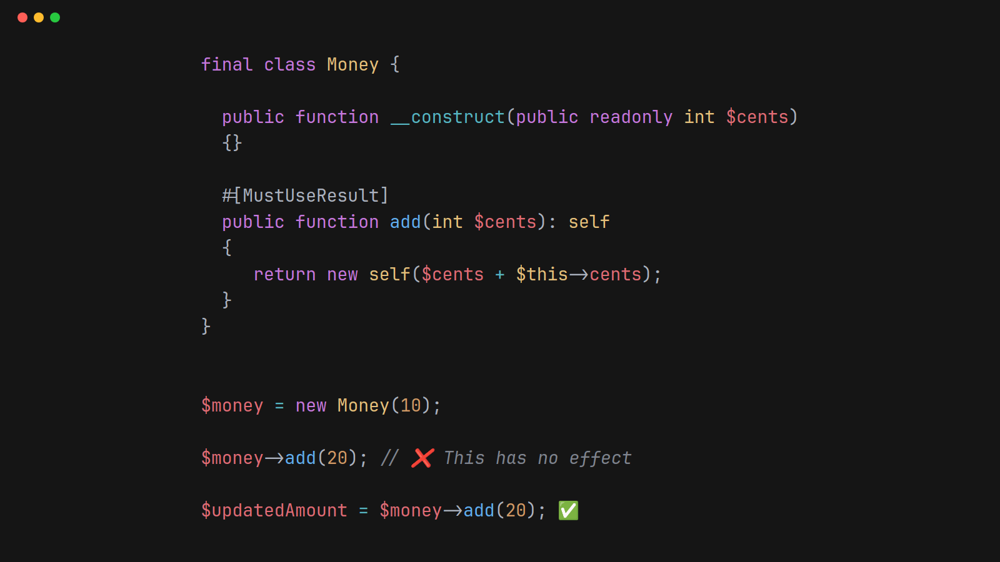

October 5th 2025

The #[MustUseResult] attribute prevents subtle bugs, however due to a recent RFC I'd recommend another approach going forward.
Adding #[MustUseResult] (from the PHP language extensions library) to a function or method means that the result must be used by the calling code.
Consider a Money class like this:
final class Money {
public function __construct(public readonly int $cents)
{}
#[MustUseResult]
public function add(int $cents): self
{
return new self($cents + $this->cents);
}
}
Note that the add method returns a new instance of Money, rather than updating the existing object.
On the face of it, the code below looks correct. However, the $money::cents property is not updated by calling the add method.
Instead add returns a new instance of the Money object, this new object has the cents property set to 30.
$money = new Money(10);
$money->add(20); // This has no effect
echo $money->cents; // Value is 10
Due to the #[MustUseResult] attribute, the code above would have an error on the $money->add(20); line:
Result returned by method must be used
The correct way of using the add method is:
$money = new Money(10);
$updated = $money->add(20);
echo $updated->cents; // Value is 30
The#[MustUseResult] attribute helps developers use the code correctly.
Since creating #[MustUseResult] PHP has introduced, from version 8.5, the #[NoDiscard] attribute. (RFC).
#[NoDiscard] and #[MustUseResult] do pretty much the same thing. A benefit of #[NoDiscard] is errors also are reported running the code and not just by static analysis.
Even if you are running PHP under 8.5, PHPStan still understands #[NoDiscard] and will report errors.
Using either #[NoDiscard] or #[MustUseResult] is a powerful way to document (to both developers and tools) the intention of how a method should be used, thus preventing bugs.